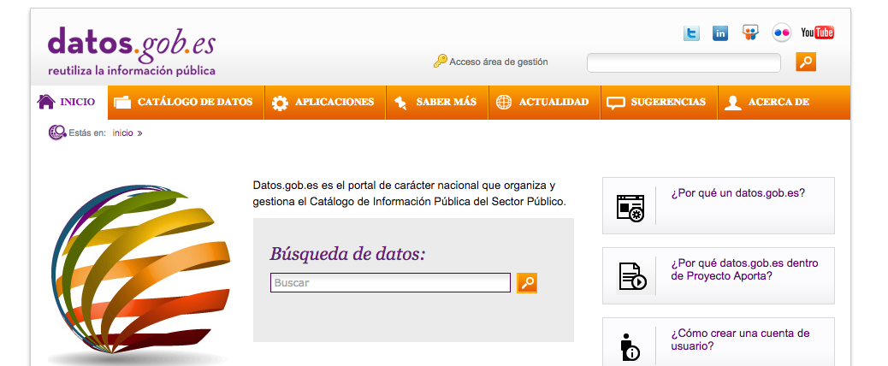
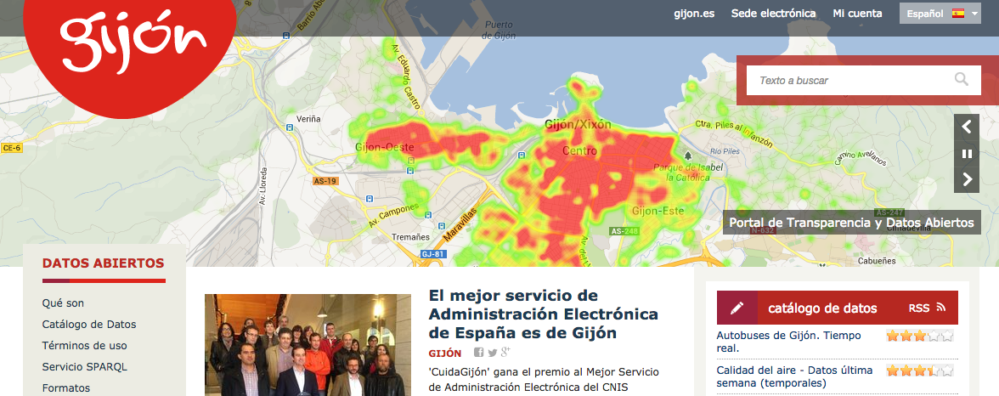
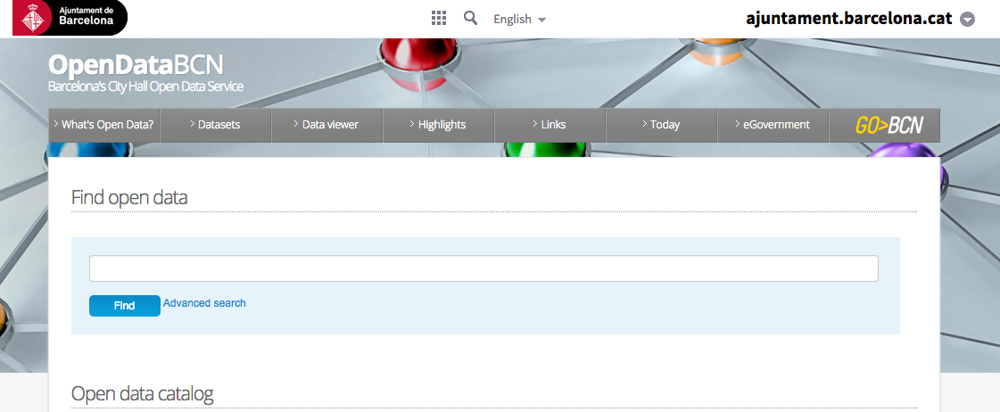
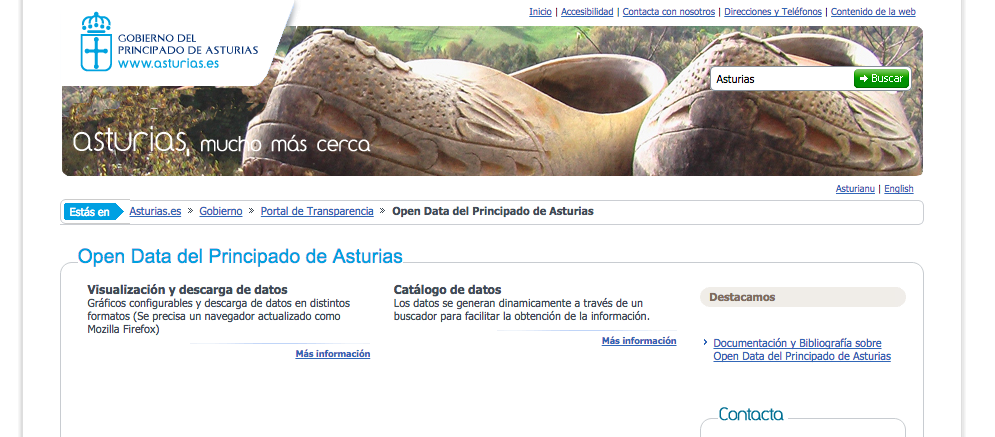

ONTORULE (EU–FP7)
- Strengthen the role of business policies in companies of the future by allowing the business user to define policies themselves.
- Extraction of these policies automatically from the documentary information of a company
- http://ontorule-project.eu
Maturity Model to Implement Open Government Data
ePSI Platform
- One-stop shop on Open Data PSI Reuse in Europe
- Engagement of stakeholders
- Advisory services (to EC and the public)
- Design, develop and implement an awareness raising strategy
- http://www.epsiplatform.eu
datos.gob.es (Spanish Govn't)
- Strategy for the Spanish Open Data Portal
- Semantic support, ontology definition
- Federation of regional/local catalogues into datos.gob.es

Technical Interoperability Standard for PSI Reuse
OGD Feasibility Reports in Ghana and Chile
Castile and Leon Open Data Initiative
Basque Country Open Data Initiative
Catalonia Open Data Initiative
Gijón Open Data
- Strategy, including Portal with Linked Data support
- Design and management of the Open Data Lab Accelerator

- http://datos.gijon.es
City of Barcelona Open Data
- Semantic Consultancy Technical consultancy for the Open Data project of the Barcelona City Council.

- http://opendata.bcn.cat
Principality of Asturias Open Data
- Open Data initiative for the Principality of Asturias
- 100% based on Linked Open Data

- http://risp.asturias.es
Navarra Open Data Initiative
Linked Data Tourism Planner